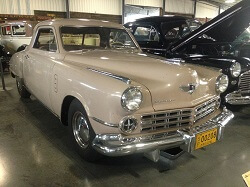
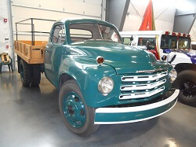
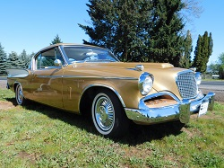
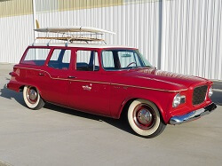

Studebaker Collection
Studebaker Automobile Collection
1928 Studebaker Dictator Coupe
Year: 1928
Donor: Terry Brandt
Engine: 4 Cyl., 75 HP
Transmission: Manual (3 speed)
Number of Doors: 2
Curb Weight in Lbs: 2,336
It may seem odd to us today to name a car "Dictator" but when this line of autos was first unveiled in the late 20s the name was intended to reflect that Studebaker felt that even their low end model could "dictate the standard" for all other car makers as an affordable, reliable, and visually appealing car. The Dictator name cause problems with sales overseas but did fairly well as a line in the US until the growing controversial political climate of the 1930s in Europe began to draw too much scorn on the name and forced Studebaker's hand in an abrupt update.
WAAAM's Studebaker Dictator is a project but it is currently on the display floor being restored for all to see and enjoy.
1929 Studebaker Commander 8
 Year: 1929
Year: 1929
Donor: John & Evelyn Lorence
Engine: 8 Cyl.
Transmission: Manual (3 speed)
Number of Doors: 2
Curb Weight in Lbs: 3,195
For as long as there was a Studebaker automobile there were almost always Studebaker Commanders in their offerings. In 1929 the Commander 8 was a mid-range model. The family that donated this car enjoyed taking it out on road trips and tours. They would often stash valuables in the only part of the car you could lock - in the rumble seat compartment.
1932 Studebaker Model 55 Regis Sport Coupe
Year: 1932
Donor: Funds from Don Mayo with special thanks to Jack Woolf in memory of Joyce Woolf
Engine: 6 Cyl.
Transmission: Manual (3 speed)
Number of Doors: 2
Curb Weight in Lbs: approx. 2,100
Hobbies help add variety to life. Some hobbies take up little space while other hobbies (like car restoration) take up a lot of space. To appease his wife Joyce, master restoration expert Jack Woolf asked her what car she would like him to work on as a gift to her. She picked her all time favorite car - a 1932 Studebaker Model 55 Regis Sport Coupe similar to the ones she saw about town as she was growing up. It took some searching but Woolf found most of one, kept hunting for parts, and eventually was able to restore it as a present for her. Jack and Joyce were married for 78 years before she passed and she used the car as her errand runner about town.
1947 Studebaker Commander Starlight Coupe
Year: 1947
Donor: John & Evelyn Lorence
Engine: 6 Cyl.
Transmission: Manual (3 speed + overdrive)
Number of Doors: 2
Curb Weight in Lbs: 3,225
After World War II many automobile manufactures scrambled to rejuvenate pre-war designs for a hungry audience. While many made superficial changes to 1942 styles, Studebaker was one of the first manufacturers to debut all new post-war designs in 1947. The most notable of these changes on the Commander Coupe (later rechristened the Commander Starlight Coupe) were the wraparound rear windshield, long rear deck, and similar front and tail styling.
1950 Studebaker 1 1/2 Ton Flatbed Truck
Year: 1950
Donation: James Ferris
Engine: 6 Cyl., approx 92 HP
Transmission: Manual
Number of Doors: 2
Curb Weight in Lbs: 4,200
GVW: 14,000
Despite initial post-war popularity, the Studebaker truck line continued to contract in the 1950s. Ads stressed the elimination of needless dead weight that enabled drivers to haul confidently from coast to coast but drivers increasingly used to more options and features found this trucks stagnancy and sameness off putting.
1957 Studebaker Golden Hawk
Year: 1957
Donor: Lois Bowman
Engine: V-8 (supercharged)
Transmission: Automatic
Number of Doors: 2
Curb Weight in Lbs: 3265
Our Golden Hawk was donated by Lois Bowman. Studebaker Golden Hawks are her all-time favorite car and have been ever since her parents got one in 1957. Even after the family car sold she continued to have fond memories of the car but they were expensive for the time and rather difficult to find. In 1957 they were the fastest car that you could get out of a factory. With no modifications you could get up to 140 mph out of the dealer’s showroom door. The original owner of this 1957 Golden Hawk bought it in California despite living up in Canada at the time. When he died he willed it to his nephew who was not interested in it and quickly sold it to another man, Frank, who lived just 5 miles from Lois’ house at Nimpo Lake in British Columbia. According to the Canadian Studebaker Club there were only 4 Golden Hawks left in the country at that time. When Frank’s health began to wane he contacted, Terry – Lois’ husband – to see if he wanted to buy what they both knew was Lois’ favorite car. Terry bought it and gave it to Lois on her 65th birthday. When WAAAM opened it was only natural for the Golden Hawk to find a home in the museum where thousands could enjoy the unique vehicle. This Golden Hawk was part of the original museum displays and in April 2013 it was donated to the museum. The car is completely original just like it was off of the showroom floor.
1960 Studebaker Lark VIII Deluxe Station Wagon
Year: 1960
Donor: Phil & Judy Jensen
Engine: V-8
Transmission: Automatic
Number of Doors: 4
Curb Weight in Lbs: 3,316
Entering their last decade in production, Studebaker's Lark Station wagons lacked the rampant chrome of their competitors. The Wagons were very popular for hauling the family around on road trips with the 4 door version vastly outselling the 2 door variant. Averaging around 22 mpg wasn't too bad either.